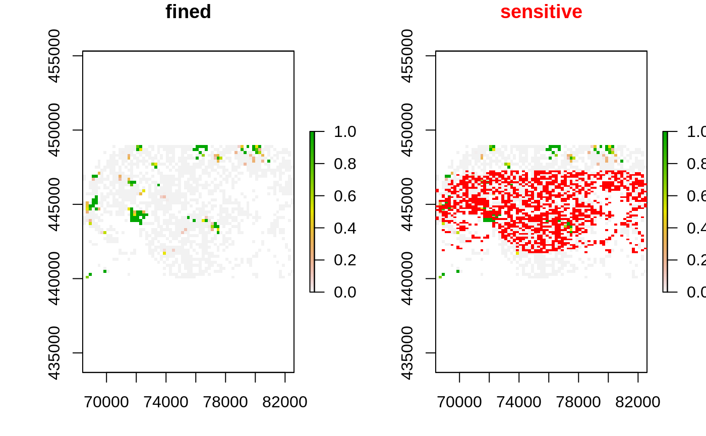
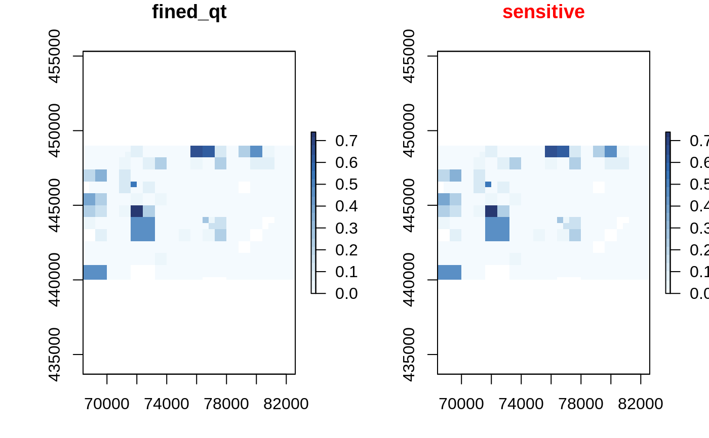
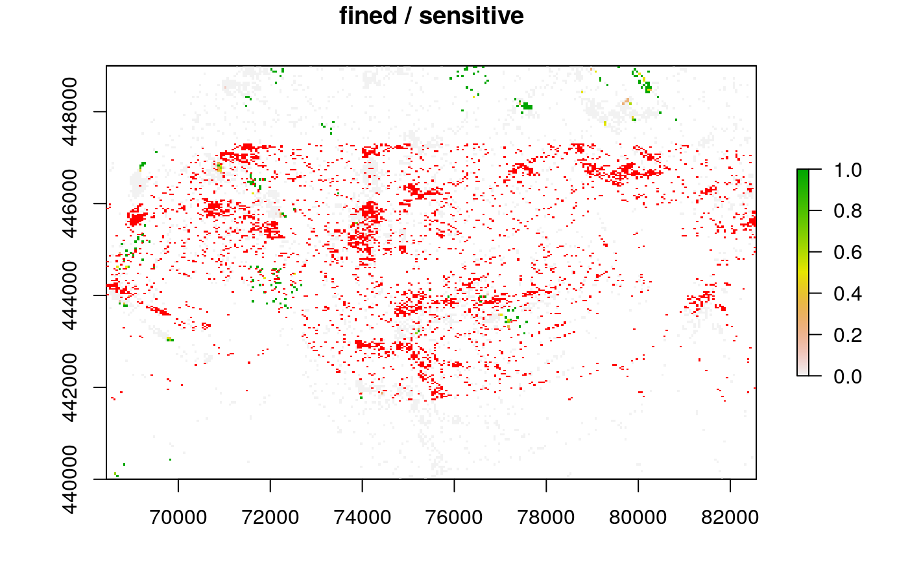
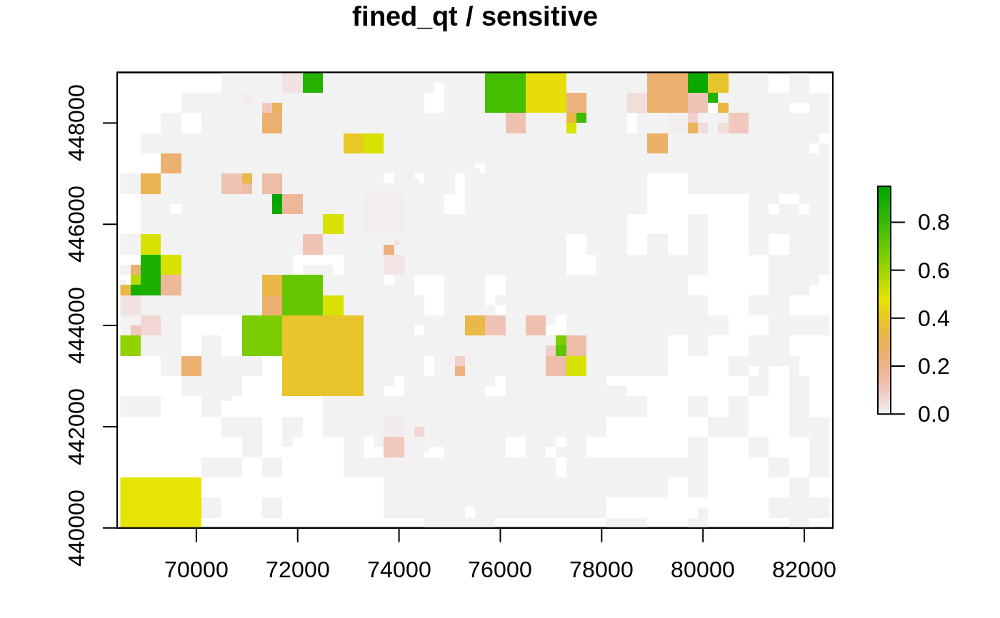

protect_quadtree reduces sensitivy by aggregating sensisitve cells with its
three neighbors, and does this recursively until no sensitive cells are
left or when the maximum zoom levels has been reached.
protect_quadtree(x, max_zoom = Inf, ...)
| x |
|
|---|---|
| max_zoom |
|
| ... | Arguments passed on to
|
a sdc_raster object, in which sensitive cells have been recursively aggregated until not sensitive or
when max_zoom has been reached.
This implementation generalizes the method as described by Suñé et al., in
which there is no
risk function, and only a min_count to determine sensitivity.
Furthermore the method the article
only handles count data (x$value$count), not mean or summed values.
Currently the translation feature of the article is not (yet) implemented,
for the original method does not take the disclosure_risk into account.
Suñé, E., Rovira, C., Ibáñez, D., Farré, M. (2017). Statistical disclosure control on visualising geocoded population data using a structure in quadtrees, NTTS 2017
Other protection methods:
protect_smooth(),
remove_sensitive()
